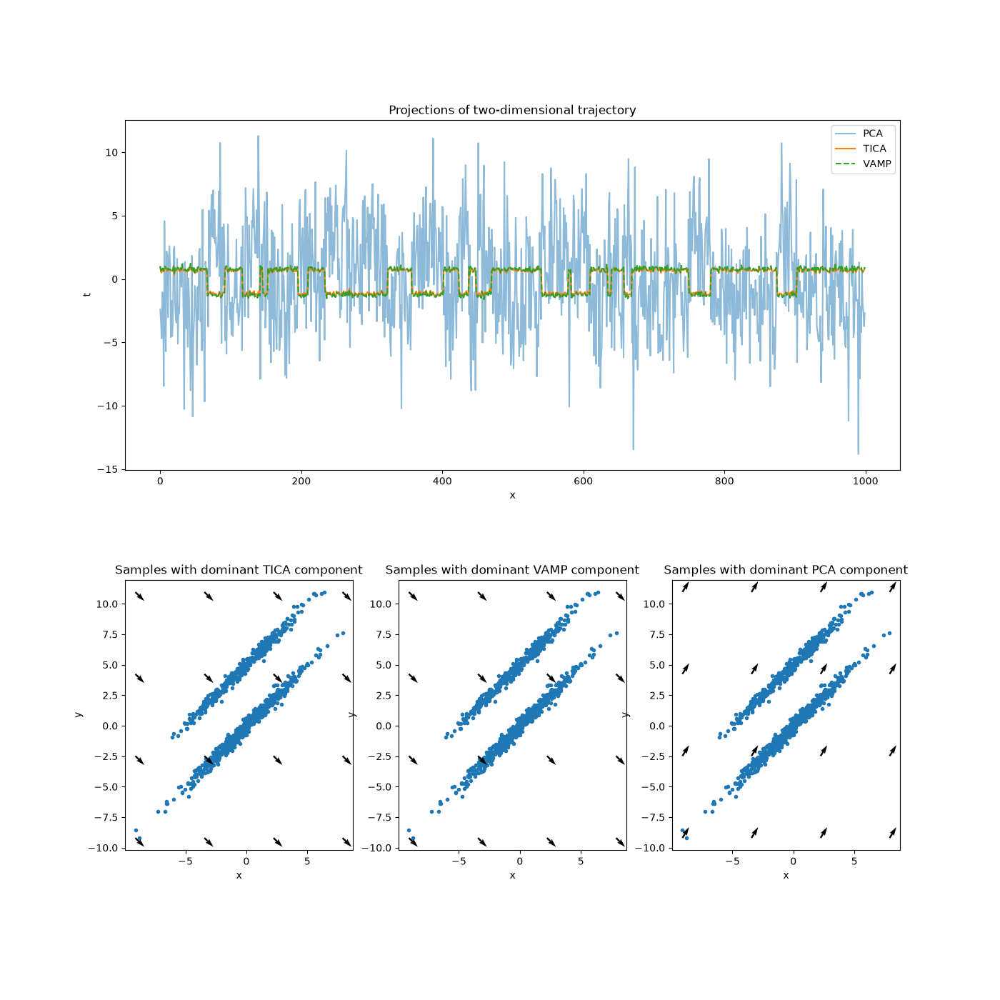

Note
Go to the end to download the full example code.
VAMP vs. TICA vs. PCA¶
This example directly reflects the example used in the TICA documentation plus a VAMP projection. Since this data stems from an in-equilibrium distribution, TICA and VAMP should not show qualitative differences.

10 import matplotlib.pyplot as plt
11 import numpy as np
12 from sklearn.decomposition import PCA
13
14 from deeptime.data import ellipsoids
15 from deeptime.decomposition import VAMP, TICA
16
17
18 def plot_dominant_component(ax, dxy, title):
19 x, y = np.meshgrid(
20 np.linspace(np.min(feature_trajectory[:, 0]), np.max(feature_trajectory[:, 0]), 4),
21 np.linspace(np.min(feature_trajectory[:, 1]), np.max(feature_trajectory[:, 1]), 4)
22 )
23 ax.scatter(*feature_trajectory.T, marker='.')
24 ax.quiver(x, y, dxy[0], dxy[1])
25 ax.set_title(title)
26 ax.set_aspect('equal')
27 ax.set_xlabel('x')
28 ax.set_ylabel('y')
29
30
31 data = ellipsoids(seed=17)
32 discrete_trajectory = data.discrete_trajectory(n_steps=1000)
33 feature_trajectory = data.map_discrete_to_observations(discrete_trajectory)
34
35 vamp = VAMP(dim=1, lagtime=1)
36 vamp = vamp.fit(feature_trajectory).fetch_model()
37 vamp_projection = vamp.transform(feature_trajectory)
38 dxy_vamp = vamp.singular_vectors_left[:, 0] # dominant vamp component
39
40 tica = TICA(dim=1, lagtime=1)
41 tica = tica.fit(feature_trajectory).fetch_model()
42 tica_projection = tica.transform(feature_trajectory)
43 dxy_tica = tica.singular_vectors_left[:, 0] # dominant tica component
44
45 pca = PCA(n_components=1)
46 pca.fit(feature_trajectory)
47 pca_projection = pca.transform(feature_trajectory)
48 dxy_pca = pca.components_[0] # dominant pca component
49
50 f = plt.figure(constrained_layout=False, figsize=(14, 14))
51 gs = f.add_gridspec(nrows=2, ncols=3)
52 ax_projections = f.add_subplot(gs[0, :])
53 ax_tica = f.add_subplot(gs[1, 0])
54 ax_vamp = f.add_subplot(gs[1, 1])
55 ax_pca = f.add_subplot(gs[1, 2])
56
57 ax_projections.set_title("Projections of two-dimensional trajectory")
58 ax_projections.set_xlabel('x')
59 ax_projections.set_ylabel('t')
60
61 ax_projections.plot(pca_projection, label='PCA', alpha=.5)
62 ax_projections.plot(tica_projection, label='TICA')
63 ax_projections.plot(vamp_projection, label='VAMP', linestyle='dashed')
64 ax_projections.legend()
65
66 plot_dominant_component(ax_pca, dxy_pca, 'Samples with dominant PCA component')
67 plot_dominant_component(ax_tica, dxy_tica, 'Samples with dominant TICA component')
68 plot_dominant_component(ax_vamp, dxy_vamp, 'Samples with dominant VAMP component')
Total running time of the script: (0 minutes 0.247 seconds)
Estimated memory usage: 730 MB